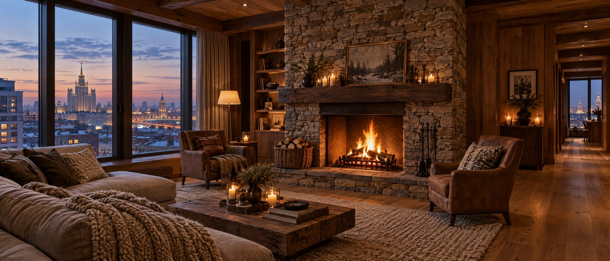
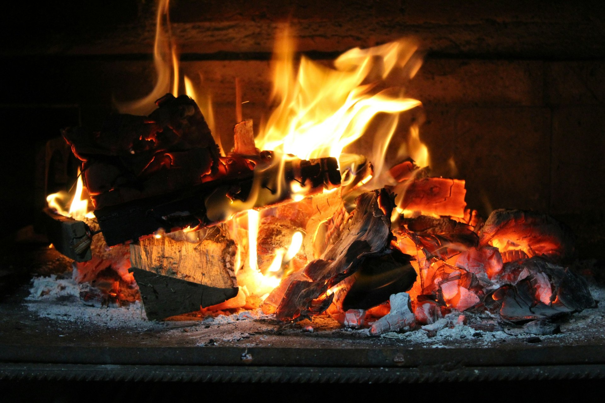
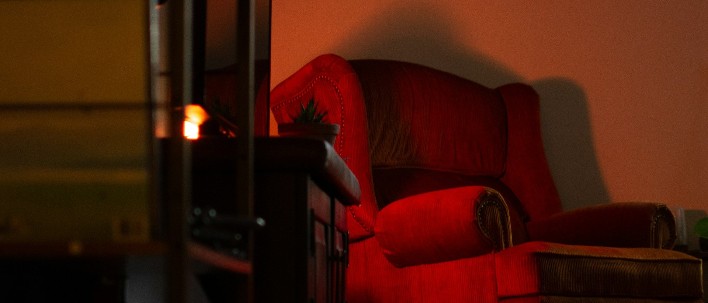
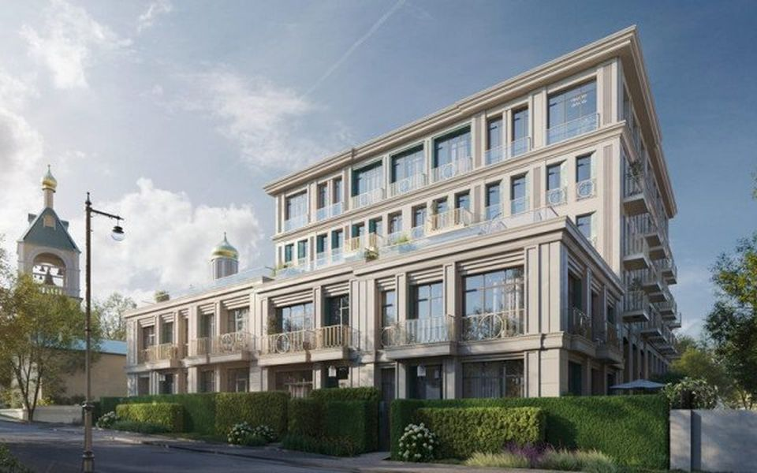
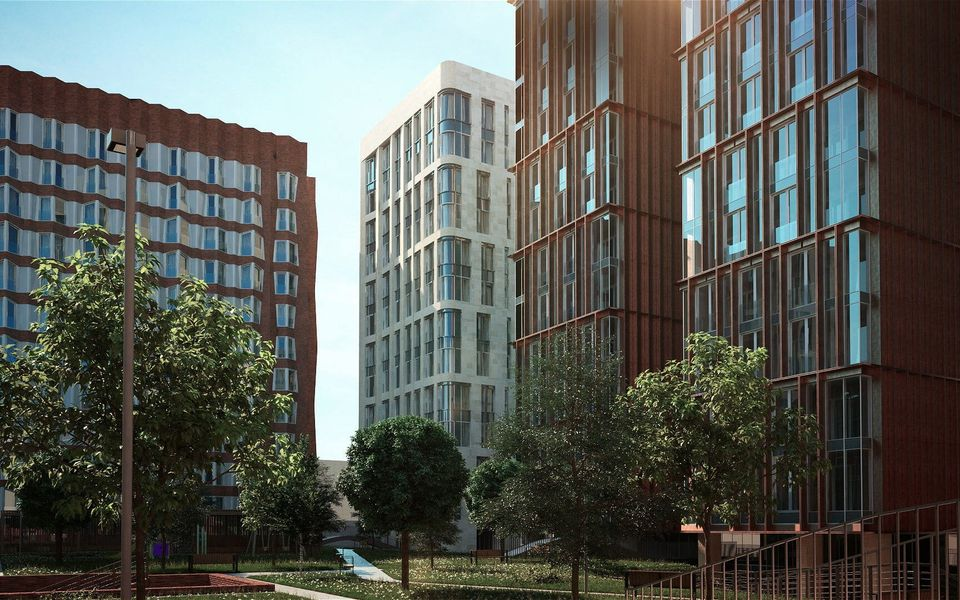
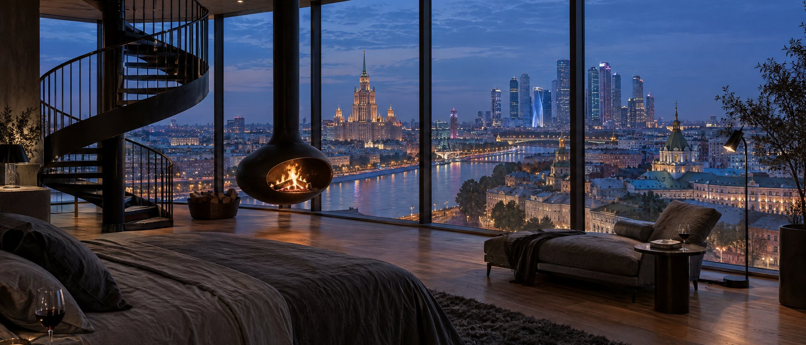

- Камин
- дровяной
- Где в доме
- 4 лота
- Подробности
- топки Brunner, дымоходы из нержавеющей стали
- Адрес
- ул. Большая Татарская, 21
- Цена
- от 1 600 тыс ₽ за м²
- Источник
- vedomosti.ru · 25.09.2026

Разборы / Живой огонь в городе
Разбор · сверка 25 сентября 2026
На заметку: настоящий дровяной камин в городской квартире бывает только там, где застройщик заранее вывел дымоход. Почти всегда это верхний этаж или пентхаус. В остальных квартирах огонь даёт биокамин, а картинку огня — паровой.

Источники — в конце разбора. Данные на сентябрь 2026.
Где можно
Нормы разрешают камин на твёрдом топливе в многоквартирном доме, но с условиями. Квартира — на верхнем этаже или многоуровневая. Здание — первой, второй или третьей степени огнестойкости: монолит и кирпич проходят. У каждого камина — свой путь для дыма: отдельный дымоход или общий, к которому камины подключены через этаж с воздушным затвором.
На практике всё решает проект. Если застройщик не вывел дымоход на кровлю, в готовом доме его почти никогда не проложить: труба пошла бы через чужие квартиры и общую крышу. Поэтому сначала спрашиваем, есть ли дымоход в конкретном лоте, а уже потом смотрим планировку.
Камин в квартире не покупают отдельно — покупают квартиру, в которую его заложили.
| Условие | Где записано |
|---|---|
| Верхний этаж или любой уровень многоуровневой квартиры | СП 54.13330.2016, п. 8.7 |
| Здание I–III степени огнестойкости | там же |
| Индивидуальный или коллективный дымоход, при коллективном — подключение через этаж | СП 7.13130.2013, п. 5.25 |
| Труба — не ниже 5 м от решётки до устья | СП 7.13130.2013, п. 5.10 |
| Металлический лист 700×500 мм перед топкой, защита сгораемых стен | СП 7.13130.2013, п. 5.21 |
| Приток воздуха на горение | СП 60.13330.2020, п. 7.4.2 |
| Вес камина учтён в расчёте перекрытия | СП 54.13330.2022, п. 6.1.3 |
Согласование
Установка камина в Москве — переустройство квартиры. Его согласуют в Мосжилинспекции по проекту: справка управляющей компании о дымоходе, чертежи с планом кровли, техническое заключение, проект переустройства. Решение принимают за 20 рабочих дней, потом монтаж, акт инспектора и новый техпаспорт в БТИ.
По оценке компаний, которые ведут такие согласования, весь путь занимает от полугода и стоит от 400 тысяч рублей — без самой топки и отделки. Топка нужна заводская, стальная или чугунная, с сертификатом.
Общий дымоход — общее имущество дома. Спросите у управляющей компании, кто и как часто его обслуживает и сколько это стоит.
Камин забирает воздух из комнаты. В хорошем проекте потерю закрывает приточная вентиляция — без неё тяга слабеет, а дым идёт в комнату.
За возможность камина рынок доплачивает от 5 % до 30 % к похожему лоту — так оценивают застройщики делюкс-проектов.

Три вида огня
| Что | Дровяной | Биокамин | Паровой |
|---|---|---|---|
| Пламя | Настоящее, с треском и запахом дерева | Настоящее, без дыма и запаха | Иллюзия: пар и подсветка |
| Дымоход | Нужен, заложен проектом | Не нужен | Не нужен |
| Тепло | Греет комнату | 2–3 кВт | Нет |
| Топливо | Дрова, где-то их нужно хранить | Биоэтанол, 0,2–0,5 л в час, горит 1–5 часов | Вода и электричество |
| Согласование | Мосжилинспекция | Не нужно | Не нужно |
| Где возможен | Верхний этаж, лот с дымоходом | Проветриваемая гостиная на любом этаже | Любая комната, даже спальня |
Характеристики биокамина — средние по рынку; минимальный объём комнаты производитель указывает для каждой модели.
Биокамин
Биокамин горит на биоэтаноле: огонь живой, дыма и сажи нет, дымоход и согласование не нужны. Пламя расходует кислород, поэтому ставить его стоит в большой гостиной с приточной вентиляцией, а после вечера у огня — проветрить. В спальню и небольшие комнаты мы биокамин не советуем.
Три правила, которые повторяют все производители: не ставить вплотную к шторам и мебели, доливать топливо только в остывшую горелку, хранить этанол вне гостиной.
Биокамин даёт огонь, но не очаг: нет треска, нет запаха дерева. Кому важно именно это, ищет лот с дымоходом.

В нашей базе
Собрали дома из нашей базы, где застройщик предусмотрел дровяной камин или дымоход под него. Почти везде это пентхаусы и верхние этажи — так устроены нормы. В Садовых кварталах лоты с дымоходом есть в нескольких корпусах, в Хамовниках 12 паровые камины стоят в квартирах всех типов.
Откройте дом: какой в нём камин и где, фото, дом на карте. Какие лоты с камином продаются сейчас — пришлём по кнопке «Получить предложение».







Актуальная подборка
Пришлём, что в продаже в этом доме сейчас: лоты, планировки, цены и условия оплаты. Обычно в тот же день.
Список пополняем: если знаете дом с камином, которого здесь нет, — напишите нам.
Что спросить
| Вопрос | Зачем |
|---|---|
| 1. В этом лоте есть дымоход? | «Можно камин» и «выведен дымоход» — разные ответы |
| 2. Индивидуальный или общий? | От этого зависят обслуживание и соседи по трубе |
| 3. Учтён ли камин в расчёте перекрытия? | Облицовка из камня весит сотни килограммов |
| 4. Есть ли приток воздуха в гостиной? | Без него камин плохо тянет |
| 5. Кто согласует переустройство? | Иногда застройщик берёт это на себя |
| 6. Кто и почём чистит трубу? | Это регулярный расход, как лифт или паркинг |
Частые вопросы
Нет. Нормы допускают камин на твёрдом топливе только в квартирах верхнего этажа или в многоуровневых, и только при дымоходе, который заложен в проекте дома.
Нет. Биокамину не нужен дымоход, это переносной или встроенный прибор. Но его ставят в проветриваемой комнате и соблюдают инструкцию производителя.
По оценке компаний, которые этим занимаются, — от 400 тысяч рублей и от полугода, без стоимости топки и отделки. Решение Мосжилинспекции — 20 рабочих дней.
Мало: меньше 2 % предложения новостроек Москвы. На элитном рынке возможность поставить дровяной камин есть примерно в каждом шестом лоте.

Источники
Разбор собран 25 сентября 2026. Нормы и цены меняются — при следующей сверке обновим.